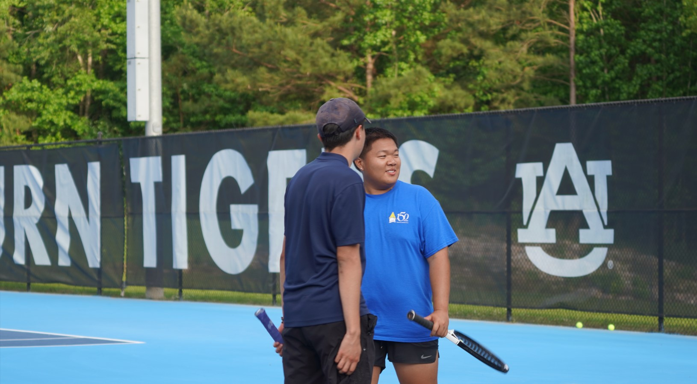
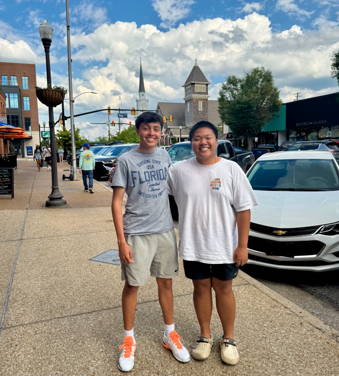

This weekend, we traveled to Auburn to compete in the War Damn Classic and ended up taking 2nd place in the Silver Bracket. It was an awesome experience, and I'm proud of how our team fought through every match. 
But today’s post isn’t just about tennis, it’s about a goodbye.
One of my officers, Julian, is heading off on a mission trip. By the time he returns, I'll have graduated, which means this was the last time I'll get to see him with the club. Today, I'm not just losing an officer or a friend. I'm losing a brother. A mentor. Someone I've looked up to, and not just because of the height difference (haha).
Julian, thank you for everything. For the advice, the laughs, the support, and the countless memories. I’ll miss you the most out of everyone. I hope our paths cross again down the line. Until then, take care and keep being the amazing person you are.
This one’s for you.
← Back